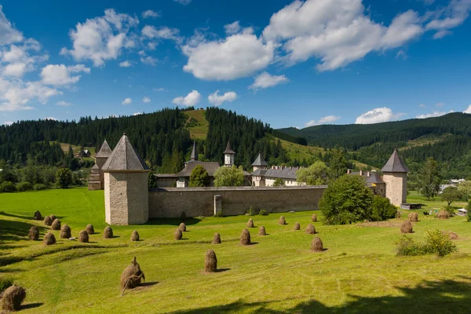
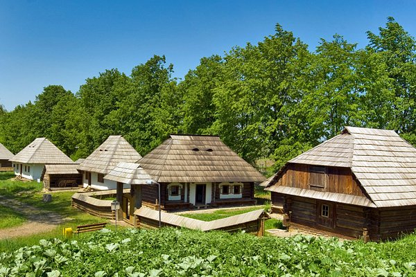
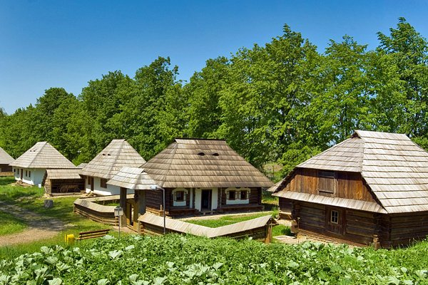

 

Localização
Suceava é uma cidade no nordeste da Romênia, localizada na região
histórica da Bucovina. Foi a capital do Principado da Moldávia entre 1388
e 1565. Hoje, é um importante centro cultural e histórico, conhecido por
monumentos como a Fortaleza de Suceava e os mosteiros pintados próximos,
que são Património Mundial da UNESCO. A cidade também serve como porta de
entrada para as paisagens cênicas dos Montes Cárpatos. Suceava tem uma
mistura de arquitetura histórica e desenvolvimento moderno, refletindo o
seu significado de longa data na história romena.